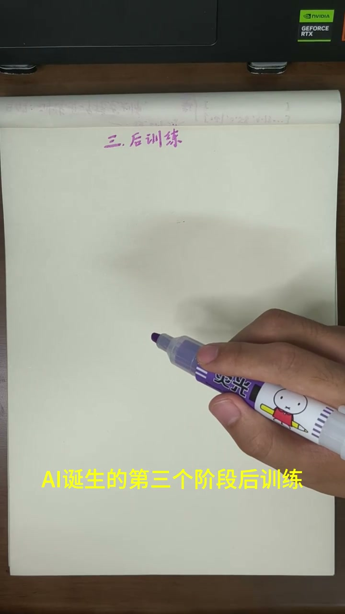
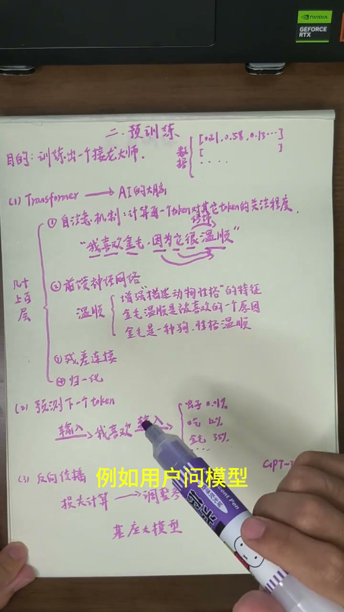
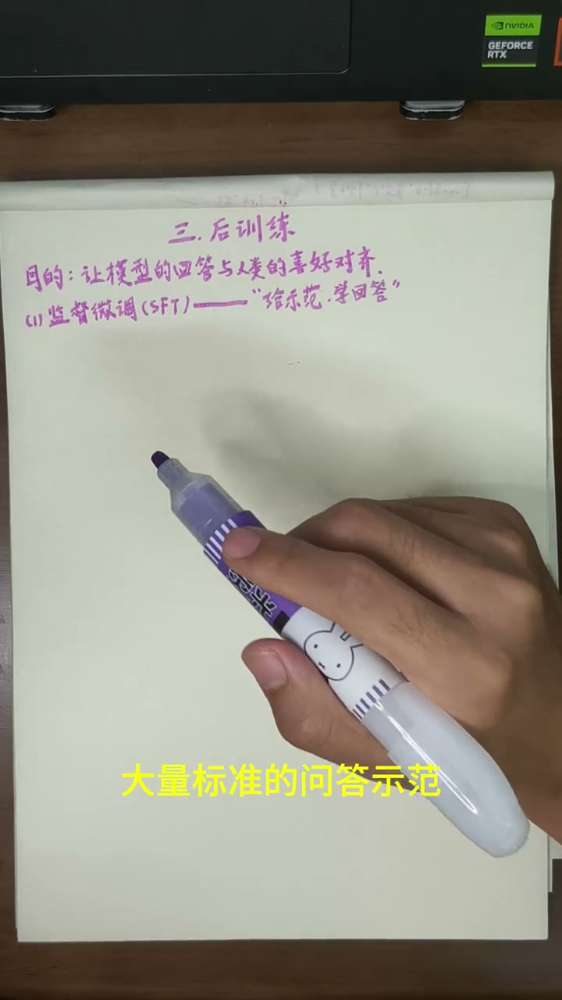
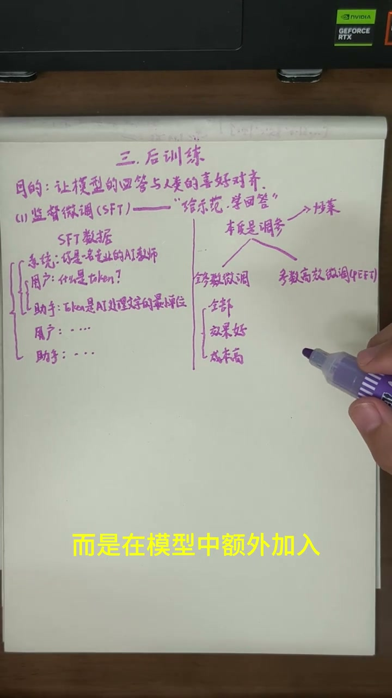
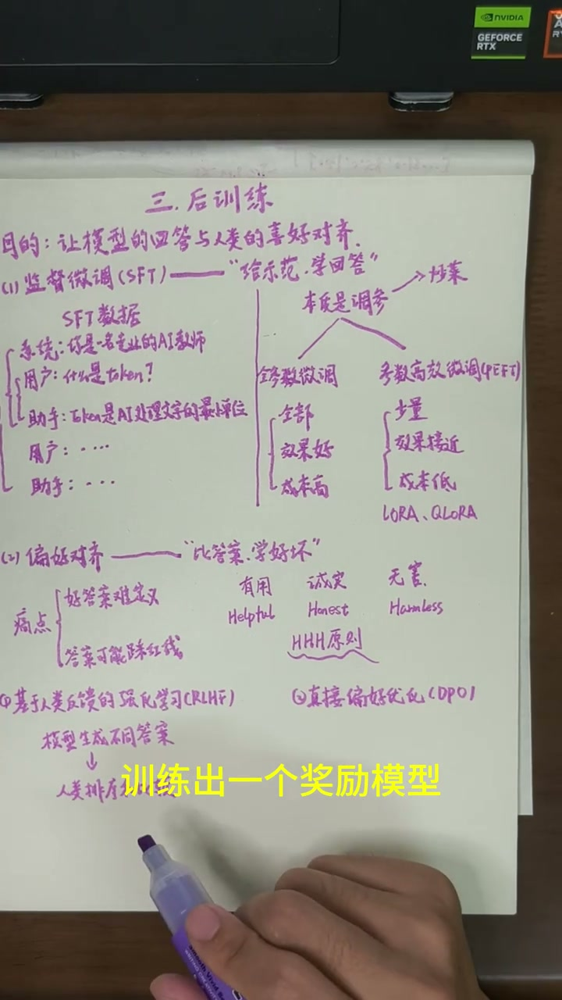

回顾：数据准备+预训练的产物
00:00前两节回顾：数据准备把文本变成带ID的Token和随机高维向量；预训练通过Transformer处理、预测下一个Token、反向传播调整参数，最终得到一个基座大模型。但此时的大模型只是一个接龙大师——用户问"我应不应该好好学习"，它回答"天天向上"，因为"好好学习天天向上"是常见文本组合，它并没有真正理解用户想咨询什么。

后训练概述：让AI学会听懂人话
01:04第三阶段：后训练（对齐训练），目的就是让模型的回答逐渐与人类的要求和偏好对齐。后训练主要包括两个内容：监督微调（SFT）和偏好对齐。
监督微调（SFT）：给示范学回答
01:18SFT全称Supervised Fine-Tuning。用六个字概括：给示范，学回答。就是给模型大量标准的问答示范，让模型学会听懂任务并按人的要求回答。
01:32训练数据叫SFT数据，最简单的形式：用户问"什么是token" → 助手答"token是大模型处理文本时的最小单位"。但实际SFT数据不止这一种形式：
- 基础问答：用户提问 + 助手理想回答
- 带系统指令的对话：设定模型角色（如"你是一名小学教师"）、回答风格、输出格式、可调用工具等，让模型根据不同情境作答
- 多轮对话：用户-助手-用户-助手不断交替，模拟真实追问场景

02:30SFT并不是在模型内部安装了一个"听话模块"，而是通过训练继续调整模型原有参数，让模型生成符合指令的答案的概率变得更高。本质还是调参。
调参比喻：炒菜
02:47博主用炒菜比喻调参：做饭需要把握火候大小、炖煮时间、油盐比例。尝一口太咸→下次少放盐→继续调整→直到满意。

03:04SFT中调参分两大类：
- 全参数微调（Full Fine-Tuning）：模型所有参数（embedding + Transformer各层）都参与调整。效果好但成本高。
- 参数高效微调（PEFT）：原模型大多数参数不变，额外加入少量可训练参数。好比在原有调料基础上加一种新配料（如十三香），只调整这种新配料的用量。主流技术包括LoRA和QLoRA。成本低且效果可能接近全参数微调。
偏好对齐：比答案学好坏
04:03偏好对齐要解决两个痛点：好答案很难直接定义（同一问题可能有成千上万种回答，哪个更好？）和模型可能踩红线（不管用户问什么，不会判断是否危险和该回答到什么程度）。
真正需要的是有用、诚实且无害（3H原则：Helpful、Honest、Harmless，由Anthropic提出并推广）。

04:47两种主要方法：
RLHF（基于人类反馈的强化学习）：
- 模型针对同一问题生成多个答案 → 人类比较排序，判断哪个更好
- 用排序数据训练一个奖励模型（像一位老师，负责给答案打分）
- 主模型不断生成新答案 → 奖励模型按人类偏好打分 → 主模型根据分数调整参数 → 逐渐提高好答案概率、降低差答案概率
DPO（直接偏好优化）：更直接。训练数据中直接给出一个问题 + 一个更好答案 + 一个较差答案，模型直接对比学习。
简单说：RLHF先训练一位老师打分，DPO直接告诉模型哪个更好。

总结：三个阶段全流程
05:50三个阶段让一个最初只会预测下一个Token的模型，逐步变成了可以正常交流、回答问题、完成任务的AI：
- 数据准备：文本资料 → 清洗 Token化 → 随机高维向量（文本→数字）
- 预训练：Transformer处理 → 预测下一个Token → 反向传播 → 基座大模型（学会语言规律和知识）
- 后训练：SFT（给示范学回答）+ 偏好对齐RLHF/DPO（比答案学好坏）→ 可以对话的AI助手